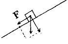

ИЗДАНИЕ 03
МЕТОДИКА № 1
ОБЩИЕ РЕКОМЕНДАЦИИ
Для начала необходимо отметить, что благоприятно спо-собртвуют увеличению роста полноценное питание, специальные физические упражнения, а также соответствующий психологический настрой. Хорошо стимулируют рост занятия спортивными играми - баскетболом, волейболом, а также различные тепловые процедуры, закаливание.
К неблагоприятным факторам надо отнести тяжелые психические и физические нагрузки. Курение и алкоголь необходимо полностью исключить!
ПИТАНИЕ
В Вашем ежедневном пищевом рационе должно присутствовать достаточное, соответствующее возрастной норме количество белков, жиров, углеводов и витаминов. Рекомендуется 3-4раза в день есть сырые овощи и фрукты. Хорошо стимулируют рост зерновые продукты. Из них предпочтение следует отдавать черному хлебу и различным кашам.
ФИЗИЧЕСКИЕ УПРАЖНЕНИЯ
Необходимо отметить, что нижеизложенный комплекс физических упражнений под силу только людям с хорошей физической подготовкой. Остальным же нагрузку следует увеличивать постепенно. Но знайте, что слишком маленькая нагрузка пользы не принесет.
Для достижения желаемого результата занятия физическими упражнениями должны отвечать четырем категориям: проводиться не реже, чем три дня в неделю; продолжительность занятий не должна быть меньше 35-40 минут; необходимо вовлекать в работу не менее 2/3 основных мышечных групп организма; занятия должны выполняться с соответствующей возрасту интенсивностью.
Критерием интенсивности является частота сердечных сокращений (ЧСС) или, проще говоря, пульс. Тренироваться надо с такой интенсивностью, чтобы ЧСС соответствовала 65-85% от максимально допустимой для Вашего возраста. 65% - это для начинающих, 85% - для опытных физкультурников. Максимально допустимую ЧСС определяют по формуле: 220 минус число лет занимающегося. Если, например, подростку 15 лет, то максимально допустимая ЧСС будет 220-15=205 ударов в минуту. 65% от нее- это 130 ударов в минуту, а 85% - 175 ударов в минуту.
А ТЕПЕРЬ ПОПОДРОБНЕЕ О САМИХ УПРАЖНЕНИЯХ.
Легкий разминочный бег в течение 5-7 минут.
20 минут отведите для упражнений на гибкость и растяжение. Это различные махи руками и ногами, наклоны, мостики, шпагаты и просто встряхивания руками и ногами. Висы на перекладине - два подхода без отягощения и один с весом 5-10 кг. Отягощение нужно привязывать к ногам. Каждый подход выполняйте по 20-30 секунд. Висы на перекладине вниз головой - два подхода без отягощения и один с весом 5-10 кг. Каждый подход по 15-20 секунд.
60-70 прыжков на месте, при этом старайтесь дотянуться до самой высокой метки на стене. Из них выполняйте две серии по 10 прыжков, толкаясь одной ногой. Каждый прыжок нужно выполнять, отталкиваясь изо всех сил.
На улице поднимайтесь в горку высотой 20-30 м, расслабляйтесь и, набирая скорость, стремительно сбегайте вниз. Повторяйте это упражнение 3-4 раза.
Три раза в неделю, готовясь ко сну, растягивайте себя (по 15-20 минут) с помощью резиновых жгутов. Один привяжите к ногам, другой к подмышкам так, чтобы они тянули в противоположные стороны.
Плавание. Выполняйте в воде различные потягивания, например, максимально вытягивайте ноги и руки при плавании брассом.
Как видите, данная методика очень проста и поэтому доступна всем. Регулярное выполнение описанных в ней рекомендаций, упражнений и диет приведет к увеличению Вашего роста на несколько желанных сантиметров.
МЕТОДИКА № 2
Данная методика представляет собой комплекс различных упражнений и рекомендации, которые способствуют
развитию гибкости мышц и суставов (закаливание, массаж, аутотренинг, определенная система питания и тренировки на спортснарядах). Возрастных ограничений для желающих увеличить свой рост нет. Итак, начнем?
ПИТАНИЕ
Рациональный пищевой режим способствует увеличению роста примерно у каждого десятого человека, независимо от наследственного строения тела. Вам предлагается широкий ассортимент растительных и животных продуктов, при этом их надо как можно меньше варить и парить - пусть сохраняется больше активных веществ. Три-четыре раза в день сырые овощи, фрукты примерно по 1,5 кг, желательно нескольких видов. Абсолютно необходимы: салат, шпинат, листовая петрушка, сельдерей, укроп, лук, ревень, эстрагон.
Собирайте дикорастущие травы: крапиву, лебеду, иван-чай, мяту, одуванчик, кислицу, подорожник, огуречную траву. Собирайте их вдали от дорог, сушите их на зиму. Хорошие стимуляторы роста - зерновые: каши, черный хлеб. Алкоголь и курение абсолютно исключить.
АУТОТРЕНИНГ
Заниматься аутотренингом лучше всего лежа или сидя, в спокойной позе. Обопритесь спиной и затылком на спинку кресла, руки положите на подлокотники, носки ног направлены немного в стороны, глаза закрыты. Перед занятием постарайтесь максимально напрячь мышцы всего тела, сосредоточьте все внимание на смысле произносимых слов, каждую фразу повторяйте 3-5 раз. Продолжительность занятий 3-5 минут. Какие слова надо углубленно и сосредоточенно повторять? Они могут быть разными. Предлагаемый текст ориентировочный. Вы можете заменить его другим, но менять слова в ходе занятий не следует!
Итак, приняли удобную позу, расслабились, начинаем медленно произносить текст, не давая отвлекать себя никакими внешними раздражителями. "Я успокаиваюсь. Я совершенно спокоен. Мои ноги тяжелеют, руки становятся тяжелыми. Приятное тепло разливается по левой ноге, постепенно переходя в правую ногу, в левую руку и в правую руку. Тепло разливается по всему телу. Тело становится теплым. Сердце бьется спокойно. Дыхание ровное, легкое. Туловище расслаблено. Мышечная сила рук сохраняется и усиливается. Сейчас занятия на тренажере или упражнения на развитие гибкости для меня особенно полезны. Тело вытягивается максимально. Оно стало пластичным, оно стало послушно моей воле".
Когда Вы произносите последнюю фразу - плавно сожмите кисти в кулак, держите так 5-10 секунд.
Запомните еще один текст, который надо повторять дополнительно к уже приведенному, когда вы занимаетесь на тренажерах: "Все мое тело стало пластичным. Оно удлиняется все больше и больше. Длиннее становятся туловище и ноги. Я расту медленно, но неуклонно!"
Эта мысль: "Я вырасту!" - должна глубоко запасть в Ваше сознание!
ГИМНАСТИКА
КОМПЛЕКСЫ' 1
Если этот комплекс Вам не поможет, то придется приступить к упражнениям на более сложных тренажерах, а пока:
1. И. П. (исходное положение) - стоя, ноги на ширине
плеч, руки вверху сцеплены в замок. Встать на носки и силь
но потянуться вверх всем телом, затем руки опустить, сце
пить замок за спиной, встать на пятки, приподняться на нос
ки. Выполнить 10-12 раз.
2. И. П. то же, руки в стороны, вращаем ими вперед по
очередно в лучезапястном, локтевом и плечевом суставах
10-12 раз. Руки опустить, расслабить. Повторять упражне
ние в обратном порядке.
3. И. П. стоя, ноги на ширине плеч. Наклоны головы на
право, налево. Старайтесь коснуться ухом плеча, не подни
мая плеч. Наклоняемся вперед, касаясь пола пальцами 20
раз. Выполнить 10-12 раз.
4. И.П. стоя, ноги расставлены шире плеч. Наклоняемся
вперед, касаясь пола пальцами 20 раз.
5. Ноги на ширине плеч. Прогибаемся назад, стараясь
достать пальцами до пяток. Выполняем 20 раз.
6. Правую ногу согнуть в колене и прижать стопу к колену
левой ноги. В таком положении наклоняемся вперед, ста
раясь коснуться руками пола (по 10 раз каждой ногой).
7. Руки отвести назад и взяться за перекладину шведс
кой стенки или за спинку стула примерно на уровне лопа
ток. Присесть 20 раз, не отпуская опоры.
8. Ноги поставить вместе. 20 раз наклониться вперед,
стараясь коснуться лбом коленей.
9. Сядьте на пол, одна нога вытянута вперед, другая со
гнута в колене, стопа отогнута назад. Наклоняемся вперед,
касаемся руками пола.
10. Лягте на спину, ноги вытянуты, руки в стороны. По
очередно поднимаем руки под прямым углом к туловищу.
11. Перевернулись на живот, ноги прямые, руки вдоль
туловища. Приподнимаем от пола голову, плечи и ноги, не
сгибая их, обхватываем ноги руками, тянемся вверх.
12. Встали на колени, оперлись руками, расставленны
ми на ширину плеч. Наклонитесь вперед, одновременно са
дясь на пятки. Руки вытянули, коснулись пола, голову опус
тить.
13. Сидя на полу, ноги сложили "по-турецки", руки перед
грудью сомкнуты в замок. Приподнимите их вверх, сколько
можно сами тянемся вверх.
14. Сидя на полу, ноги вытянем вперед. Наклоняемся впе
ред, стараемся достать руками кончики пальцев на ногах, а
головой - колени.
15. Легли на спину, руки на пояснице. Поднимаем ноги
вверх, стараясь как бы дотянуться до пола за головой ими.
Все упражнения нужно повторять 15-20 раз. Они способствуют не только росту, но и формированию правильной осанки. Делать их через 1,5-2 часа после еды.
КОМПЛЕКС №2
1. Сели на пол, ноги врозь. Сгибаем правую ногу в коле
не, не отрывая ее от пола, дотягиваем пятку до туловища.
Левую также сгибаем, ставим ее так, чтобы она внешней
стороной стопы коснулась правой ноги и колена. Повора
чиваем туловище влево, беремся правой рукой за ступню
левой ноги, затем заводим левую руку за спину и касаемся
правого бедра. Голову поворачиваем, чтобы подбородок
находился над левым плечом. Все это делаем на медлен
ном глубоком вдохе. Зафиксировали позу на несколько се
кунд, задержав дыхание. На вдохе возвращаемся в исход
ное положение, не делая резких движений. Расслабились
и, отдохнув несколько секунд, повторим в обе стороны по
два раза.
2. Встали, ноги вместе. Поднять руки над головой - глу
бокий вдох, медленно наклониться вперед, касаясь руками
ног, а носом коленей - выдох. В такой позе стоять до 5 се
кунд. Вернуться в исходное положение - вдох. Повторить 4
раза.
3. Лечь на живот. Сделать медленный глубокий вдох, го
лову поднять как можно выше. Затем, напрягая мышцы спи
ны, поднять плечи, выгибая туловище назад, слегка опира
ясь на руки. Задержать дыхание, оставаясь в этой позе 7-
12 секунд. Медленный'выдох - возвращаемся в И. П. По
вторяем упражнение.
4. Повернулись на спину, мышцы расслаблены. Медлен
но поднимаем ноги под прямым углом к туловищу. Опира
ясь на руки и локти, делаем стойку на предплечьях. Держим
стойку сначала 3 мин., по мере усваивания комплекса - до
10 мин. Возвращаемся в И. П., расслабляемся, дышим глу
боко и медленно через нос.
5. Сели на пол, ноги вытянули перед собой. Правой ру
кой возьмитесь за пальцы левой ноги и поднимите ее на
сколько можно вверх. Левой рукой дотянитесь до стопы пра
вой ноги и в таком положении задержитесь на 1-2 мин. Ды
хание произвольное, глубокое.
6. Легли на спину, руки немного в стороны, ладони к полу.
Ноги подняли на 45 градусов от пола, подержали так, затем
подняли до прямого угла. Дыхание произвольное, глубокое.
Перенесите ноги как можно дальше за голову, задержитесь
на несколько секунд, пока не устанете. Затем медленно вер
нитесь в И. П.
7. Стоим, ноги врозь, руки в стороны на уровне плеч, ла
донями вниз. Делаем медленные наклоны влево, стараясь
дотянутся рукой до ступни. В таком положении задержитесь
на 5 dteK., медленно возвращаемся в И. П. Повторяем в обе стороны 2 раза. Дышим произвольно.
8. Сели на корточки. Руки в "замке" перед собой. Попы
таемся встать на голову. Опускаем голову рядом с перепле
тенными пальцами так, чтобы коснуться пола. Медленно
подтягиваем колени и, оттолкнувшись от пола, поднимаем
ноги вверх. Выпрямляемся в таком положении на 5-20 сек.
Сначала это будет трудно.
9. Сидя "по-турецки", откинули голову назад и медленно
наклонились вперед, коснулись теменем пола. Руки при
этом вытянуты вдоль туловища. Остаемся в этом положе
нии 1-2 мин. Дышим глубоко и медленно.
НЕСКОЛЬКО РЕЦЕПТОВ ТЕМ, КТО ХОЧЕТ ПОДРАСТИ
1. Правильное питание. Рацион должен быть достаточ
ным по калорийности и полноценным по качественному со
ставу (имеет значение соотношение белков, жиров и угле
водов).
Рекомендуется простая здоровая пища: гречневая, овсяная каши, творог с медом, печеные яйца, овощи, фрукты, зелень (особенно лук), чеснок, сельдерей, черемуха, пастернак, шиповник, облепиха, цветочная пыльца.
2. Соблюдение режима труда и отдыха, физических на-
грузЛ. Естественно, необходимо отказаться от вредных
привычек: алкоголя, курения и др. При занятиях спортом
особенное предпочтение отдавать упражнениям на растя
гивание, расслабление, прыжкам, игровым видам спорта:
баскетболу, Волейболу.
3. Регулярное выполнение спецупражнений (комплекс
ниже). Дополнить их плаванием, по мере возможности чаще,
закаливанием и тепловыми процедурами, массажем.
КОМПЛЕКС СПЕЦУПРАЖНЕНИЙ, СПОСОБСТВУЮЩИЙ РОСТУ
Начните с небольшой разминки, разомните суставы рук, ног, пбзвоночника с помощью круговых движений, наклонов назад - вперед, поворотов, махов. .
1...Встать около стены, тянуться вверх, приподнявшись на носках, Максимально распрямляясь.
2. Подтянуться на перекладине, затем, опустившись,
максимально расслабиться и повисеть несколько секунд.
3. В висе - маятникообразные колебания ног вправо-вле
во.
4. S расслабленном висе - повороты корпуса направо-
влево,
5. Поочередно отталкиваясь правой, левой ногой, затем
обеими ногами, подпрыгивать, стараясь достать рукой вы
соко расположенный предмет.
6. И. П. лежа на спине, ноги прямые, руки в стороны. По
очередно поднимайте то одну, то другую ногу до прямого
угла. ..
7. И. П. лежа на животе, ноги прямые, руки за спиной в
"замке". Прогнуться, приподнимая голову и плечи.
8. И. П. лежа на животе, ноги прямые, руки вытянуты
вдоль тела. Поднимать сомкнутые прямые ноги.
9. И. П. лежа не спине, руки на пояснице. Поднимайте
сомкнутые прямые ноги, пытаясь закинуть их за спину.
Каждое упражнение повторять 10-12 раз и более, в зависимости от подготовки.
ТРЕНАЖЕРЫ
И, наконец, подготовьте свое тело к решающему "броску".
Переходим к тренажерам, изготовить их придется самим. Общая продолжительность занятий по увеличению роста составит 1,5-2 часа в день, это время на занятия не пропадет зря!
Разбейте время на несколько раз, как Вам удобнее, тяжелых физических нагрузок избегайте.
Примерный план построения занятий: легкая разминка, упражнения на гибкость, прогреваем мышцы электрогрелкой, ванной, душем, переходим к прессоционному массажу в сочетании с аутотренингом, приступаем к занятиям натре-нажерах.
Осбаиваем их постепенно, не стоит сразу подвешивать груз Тяжелее чем 20-25% собственного веса тела. Затем понемногу наращиваем усилия, доводим груз к концу первого года до 70% веса собственного тела.
Шкала
Трос
Груз
Примерная схема наращивания груза: при вашем весе 70 кг - первоначальная нагрузка - 10-17 кг. Ежедневно, кроме выходных, добавляем по 150 гр. К концу года груз составит 50- 60 кг. При этом и первые 15 кг берем не сразу а наращиваем их за 3-4 подхода к снаряду. Вот почему пружинный тренажер (рис. 1) с дозированной шкалой, поначалу предпочтительней тренажера с блоками и грузами (рис. 2). В нем применяется ручка особой конструкции, на которую наматывается трос.
Вы можете регулировать его длину, правильно дозировать усилие. Движения плавные, без рывков. Длину троса отрегулируйте так, чтобы приподнявшись на носках, Вы могли вытянутыми руками, захватить поперечную планку на ширине плеч.
Научитесь расслаблять мышцы и переходите к выполнению серии затухающих движений по амплитуде, стараясь по мере уменьшения амплитуды максимально удлинить туловище. При этом движения: назад, вперед, вбок, круговые. Продолжительность каждого подхода 3-5 минут, между подходами отдохните лежа, занимаясь аутотренингом, не отвлекайтесь, сконцентрируйте свое внимание на одной мысли: "Я ВЫРАСТУ, ОБЯЗАТЕЛЬНО ВЫРАСТУ!"
МЕТОДИКА № 3
ЕЩЕ ДВА ВОЗМОЖНЫХ СПОСОБА УВЕЛИЧЕНИЯ РОСТА
СПОСОБ 1
Принцип: К ногам во время сна прикладывается регулируемое растягивающее усилие продолжительностью около 8 часов (время сна). В результате расслабления мышц и позвоночника происходит их растяжение, а также растяжение связок, хрящей, суставов и костей. Рост человека уве-личиваеУся за несколько месяцев.
Реализация:
1. Возьмите любую чистую старую обувь, которая жест
ко крепится на ногах (например, ботинки).
2. Возьмите любой резиновый амортизатор (жгут)! Один
конец амортизатора закрепите к ботинкам, а другие его кон
цы закрепите к любому предмету, находящемуся со сторо
ны ног вне кровати.
3. Перед сном надевают обувь с амортизаторами. Уси
лие растяжения подбирается таким, чтобы оно ощущалось,
но не было сильным. При перемещении тела к изголовью
кровати растяжение усиливается, в обратную сторону -
уменьшается. Это позволяет регулировать силу растяжения.
Примерно также можно в дневное время растягивать верх
нюю часть туловища, удерживая концы амортизатора в ру
ках.
4. Постель должна быть жесткой, чтобы усилие переда
валось на позвоночник.
5. В вашем желании увеличить свой рост очень важное
место занимает психологический момент. Вы должны овла
деть минимальными навыками аутогенной тренировки, вну
шать себе, что увеличение роста идет нормально. Вы долж
ны быть уверены в успехе на 100%. Не надо измерять рост
каждое утро - между измерениями надо сделать перерыв в
несколько месяцев, чтобы был виден результат.
6. Как нежная трава пробивается через асфальт, так и
несильное, но длительное растяжение тела перейдет в но
вое качество - увеличение роста.
Вариант: Для увеличения преимущественно длины ног в п. 4 постель должна быть мягкой. В этом случае основное растяжение прикладывается к ногам, так как основная масса тела вдавливается в мягкую постель.
СПОСОБ 2

Для увеличения роста во время сна надо кровать со стороны головы поднять на 15-25 см относительно горизонтали. Из физики известно, что если тело находится на наклонной плоскости, то на него действует сила F, которая в нашем случае, воздействуя на каждый участок тела, действует как растягивающая. Матрац и подушка должны быть жестко закреплены на кровати. Сила F равна О, если кровать расположена горизонтально.
ПОМНИТЕ, ЧТО В КАЖДОМ ЧЕЛОВЕКЕ ЗАЛОЖЕНЫ РЕЗЕРВЫ ДЛЯ УВЕЛИЧЕНИЯ РОСТА НА 6-8 СМ!
Уникальные издания.